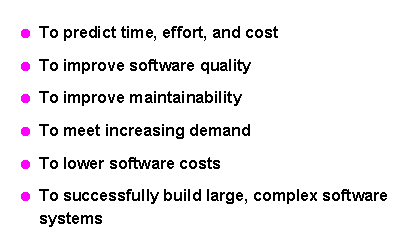
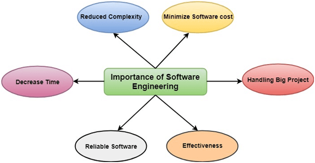
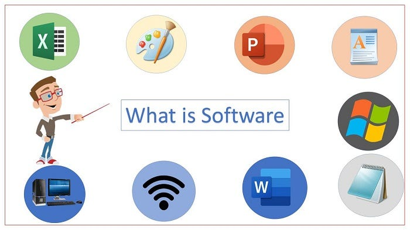

Topics
- Introduction to Software Engineering
- Software Crisis
- HTML Version and Element
- HTML Doctype Declarations
- HTML Typography Tags
- HTML Document Formatting and Performatting
- HTML Version and Element
- HTML Doctype Declarations
- HTML Typography Tags
- HTML Document Formatting and Performatting
- HTML Version and Element
- HTML Doctype Declarations
- HTML Typography Tags
- HTML Document Formatting and Performatting
- HTML Version and Element
- HTML Doctype Declarations
- HTML Typography Tags
- HTML Document Formatting and Performatting
Software Engineering
Introduction to Software Engineering
Software Engineering :
Software + Engineering
Software Engineering is an engineering branch related to the evolution of software product using well-defined scientific principles, techniques, and procedures. The result of software engineering is an effective and reliable software product.
>>> Software engineering is the discipline that applies engineering principles to the creation and maintenance of software. It encompasses the entire software development lifecycle (SDLC) and aims to produce high-quality software solutions.Software :
Software refers to the collection of programs, data, and instructions that tell a computer or other electronic device how to perform specific tasks or operations. Unlike hardware, which encompasses the physical components of a computer, software is intangible and exists as code and digital information.
Engineering :
Engineering is the application of scientific principles and mathematical techniques to design, build, and maintain systems, structures, and devices. It involves solving complex problems by combining knowledge from various fields to create effective solutions that address practical needs and challenges.

Why is Software Engineering required ?
Software engineering is required to manage complexity, ensure reliability, and improve efficiency in software development. It provides structured methods for designing, building, and maintaining software systems, leading to higher quality, better performance, and a positive user experience. It also helps in managing risks, optimizing resources, and supporting long-term maintenance and innovation.
To manage Large software
For more Scalability
Cost Management
To manage the dynamic nature of software
For better quality Management
Complexity Management :- Handling Complexity, Scalability
Reliability and Quality :- Minimizing Errors, Maintaining Quality
Efficiency and Performance :- Optimizing Resources, Improving Development Speed
User Satisfaction :- Meeting User Needs, Enhancing Usability
Maintainability and Support :- Ease of Maintenance, Long-Term Support
Risk Management :- Identifying Risks, Predictable Outcomes
Consistency and Standardization :- Adhering to Standards, Best Practices
Innovation and Advancement :- Driving Innovation, Adapting to Change
Importance of Software Engineering
Software engineering is important because it ensures that software is reliable, efficient, and meets user needs. It manages complexity, reduces errors, facilitates maintenance, and supports innovation, leading to higher quality and more effective software solutions.
Reduces Complexity
Minimize Software cost
Decrease time
Handling Big Project
Effectiveness
Reliable software
Managing Complexity
Structured Approach:
Software engineering provides methodologies and practices to handle the complexity of modern software systems, ensuring they are designed and built systematically.
Ensuring Reliability
Error Reduction:
Rigorous testing and validation processes help identify and fix defects, increasing the reliability of software and reducing the likelihood of failures.
Improving Efficiency
Optimized Performance:
Engineering practices optimize software to use resources effectively and perform well under various conditions, enhancing overall efficiency.
Enhancing User Experience
Meeting Needs:
Focuses on understanding and addressing user requirements, leading to software that is user-friendly and provides a positive experience.
Facilitating Maintenance
Ease of Updates:
Emphasizes creating maintainable code and flexible architectures, making it easier to update and support software over its lifecycle.
Managing Risks
Risk Mitigation:
Provides tools and techniques to identify and manage risks, such as cost overruns and project delays, improving the chances of successful project outcomes.
Standardization and Consistency
Adherence to Best Practices:
Ensures that development processes follow industry standards, promoting consistency and interoperability across software systems.
Supporting Innovation
Driving Progress:
Enables the development of new technologies and solutions, supporting continuous innovation and adaptation to evolving technological trends.
Program Vs Software
Program :
Program is a combination of source code & object code.
Definition:
A program is a set of instructions written in a programming language that performs a specific task or solves a particular problem.
Scope:
Typically refers to a single, self-contained set of instructions that can execute a defined function (e.g., a calculator program).
Examples:
A script that automates a task, a small utility that performs calculations, or a basic text editor.
Software :
Software is a set of instructions, data or programs used to operate computers and execute specific tasks.
Program + User interface + Operating procedures + documentation = softwareDefinition:
Software is a broader term that encompasses a collection of programs, data, and related documentation that together provide functionality and support for various tasks.
Scope:
Refers to a complete system or suite of applications that work together or provide a range of functionalities (e.g., an operating system, office suite, or a complex application with multiple features).
Examples:
An operating system (e.g., Windows, macOS), a suite of productivity applications (e.g., Microsoft Office), or a web browser (e.g., Google Chrome).
Key Differences
Complexity:
Programs are often individual components or functions, while software can consist of multiple programs and components working together.
Functionality:
Programs usually perform specific tasks, whereas software provides a broader range of functionalities and may include user interfaces, data management, and system integration.
Integration:
Software often integrates multiple programs and tools to deliver a complete solution, whereas a program is typically focused on a single function or task.
Software Crisis
Software Crisis is a set of difficulties or problems encountered while developing software.
The "software crisis" refers to a set of problems faced by the software industry, particularly during the 1960s and 1970s, as the demand for complex software systems grew. This term highlights the difficulties in developing software that is reliable, maintainable, and delivered on time and within budget.Size :
Software is becoming more expensive and more complex with the growing complexity and expectation out of software.
For Example : the code in the consumer product is doubling every couple of years.Quality :
Many software products have poor quality, i.e., the software products defects after putting into use due to ineffective testing techniques.
For Example : Software testing typically finds 25 errors per 1000 lines of code.Cost :
Software development is costly i.e. in terms of time taken to develop and the money involved.
For Example : Development of the FAA's Advanced Automation System cost over $700 per lines of code.Delayed Delivery :
Serious schedule overruns are common. Very often the software takes longer than the estimated time to develop, which in turn leads to cost shooting up.
For Example : one in four large-scale development projects is never completed.
Software Development Life Cycle Models (SDLC)
A software development life Cycle model is a pictorial and diagrammatic representation of the software life cycle.
SDLC is used by the software industry to design, develop and test high quality software.

Html Versions & Element :
HTML (Hyper text mark-up language) is developed by Team Bemers-Lee.
| Versions | Year |
|---|---|
| HTML | 1991 |
| HTML 2.0 | 1995 |
| HTML 3.2 | 1997 |
| HTML 4.01 | 1999 |
| XHTML | 2000 |
| HTML5 | 2014 |
An html element must have <starting tag> contents <closing tag>
Example :
<body> : starting tag
My name is amit : contents
</body> : closing tag
Html Doctype Declarations :
- DOCTYPE Declarations :
Doctype declaration is a comment that tells in which version of Html coding is done.
Doctype declaration tells our web server that we are coding in HTML. - Types of Doctype Declaration :
- HTML 4.01
<!DOCTYPE HTML PUBLIC "//W3C//DTDHTML4.01Transitional//EN""http://www.w3.org/TR/html4/loose.dtd">
- XHTML
<!DOCTYPE HTML PUBLIC "//W3C//DTDHTML4.01//EN""http://www.w3.org/TR/html4/strict.dtd">
- HTML 5
<!DOCTYPE html> And <!doctype html>
- HTML 4.01
- Note :
Always you have to do doctype declaration in html 5 version.
If you do the doctype declaration in html5 version then you can take advantage of all the features of HTML 4 and XHTML.
- Basic Structure in HTML 5 doctype declaration :
<! DOCTYPE html> <html> <head> <meta charset="UTF-8"> <meta name="viewport" content="width=device-width, initial-scale=1.0"> <title> Write title content here <title> </head> <body> Write body content here. </body> </html>
Typography tags :
Typography tags in HTML are elements used to structure and style text content on web pages, ensuring that text is presented in a clear, readable, and visually appealing manner. These tags help define the hierarchy, emphasis, and semantic meaning of the text. Here are some of the key typography tags in HTML :
Heading tag
Paragraph tag
Centered tag
Moving tag
-
- Text Formatting :
- <b> : Bold text.
- <strong> : Important text, typically rendered in bold.
- <i> : Italic text.
- <em> : Emphasized text, typically rendered in italics.
- <mark> : Highlighted text.
- <small> : Smaller text.
- <del> : Deleted text (strikethrough).
- <ins> : Inserted text (underline).
- <sub> : Subscript text.
- <sup> : Superscript text.
-
- Quotes and Citations :
- <blockquote>: Block-level quotation.
- <q>: Inline quotation.
- <cite>: Citation or reference.
- <abbr>: Abbreviation or acronym.
-
- Lists :
- <ul>: Unordered list.
- <ol>: Ordered list.
- <li>: List item.
-
- Preformatted Text :
- <pre>: Preformatted text, preserving spaces and line breaks.
-
- Code and Keyboard Input :
- <code>: Inline code.
- <kbd>: Keyboard input.
- <samp>: Sample output.
-
- Span and Div :
- <span>: Inline container for text.
- <div>: Block-level container for text or other elements.
- Heading text tags :
<h1> to <h6>: Define headings.
Heading tags in HTML are used to define headings for web content, providing a way to structure and organize information hierarchically. They range from <h1> to <h6>, with <h1> being the most important and <h6> the least important. These tags not only affect the visual presentation of the content but also play a crucial role in SEO and accessibility.
Main heading : <h1>
Sub headings : <h2>, <h2>, <h3>, <h4>, <h5> and <h6><h1> heading one </h1> <h2> heading second </h2> <h3> heading third </h3> <h4> heading fourth </h4> <h5> heading fifth </h5> <h6> heading sixth </h6> - Paragraph text tag :
<p>: Defines a paragraph.
The <p> tag in HTML is used to define a paragraph of text. It is a block-level element, meaning it will automatically start on a new line and take up the full width available. The <p> tag is one of the most basic and commonly used elements in HTML, helping to structure and format text content.<p> Welcome to my html website. </p> - Centered text tag :
The <center> tag in HTML was used to center-align text and other elements within its container. However, it is important to note that the <center> tag is deprecated in HTML 4.01 and not supported in HTML5. This means it should not be used in modern web development as it is no longer considered a best practice for styling content. Instead, CSS should be used to achieve centering.
<p> Center content write </p> - Moving text tag :
The <marquee> tag in HTML was used to create a scrolling text or image display within a web page. However, it is important to note that the <marquee> tag is obsolete and deprecated in HTML5. This means it should not be used in modern web development as it is no longer supported by HTML standards and is not guaranteed to work in all browsers. Instead, CSS and JavaScript should be used to create scrolling or animated text and images.
- Attributes of the <marquee> Tag :
- direction : Specifies the direction of the scroll (left, right, up, down).
- behavior : Specifies the scrolling behavior (scroll, slide, alternate).
- scrollamount : Specifies the speed of the scrolling (numeric value).
- scrolldelay : Specifies the delay between each scroll movement (numeric value in milliseconds).
- loop : Specifies the number of times the marquee will loop.
- bgcolor : Specifies the background color of the marquee.
<marquee> Moving Content Write Here </marquee>
HTML Document Formatting and Performatting :
HTML Document Formatting and Preformatting refer to how HTML handles and displays content, particularly text.
HTML Document Formatting : HTML Document Formatting involves how text and elements are visually arranged and styled within an HTML document. This includes the use of various HTML tags to control the appearance and structure of content.
-
- Bold Text (<b> and <strong>) :
- <b> : Used to make text bold without implying any extra importance.
- <strong> : Used to emphasize text strongly, typically rendered in bold, and implies that the text is of strong importance.
-
- Italic Text (<i> and <em>) :
- <i> : Used to italicize text without implying any emphasis.
- <em> : Used to emphasize text, typically rendered in italics, and implies that the text is important.
-
- Underline Text (<u>) :
- <u> : Used to underline text, though it is often better to use CSS for underlining text for semantic clarity.
-
- Strikethrough Text (<s> and <del>) :
- <s> : Used to indicate text that is no longer accurate or relevant.
- <del> : Represents deleted text, often used in document revisions
-
- Subscript and Superscript (<sub> and <sup>) :
- <sub> : Used to display subscript text.
- <sup> : Used to display superscript text.
-
- Inline Code (<code>) :
- <code> : Used to display inline code snippets.
-
- Keyboard Input (<kbd>) :
- <kbd> : Used to indicate keyboard input.
-
- Quotation (<q> and <blockquote>) :
- <q> : Used for inline quotations.
- <blockquote> : Used for block-level quotations, often indented from the rest of the text.
- Hr tag :
Empty element tag
<hr>
-
Performatting : Preformatting refers to preserving the exact formatting of text as it appears in the HTML code. This is achieved with the <pre> tag, which maintains whitespace, line breaks, and formatting, making it useful for displaying code or other preformatted text.